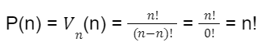
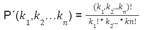
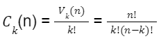
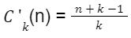

Permutácie
Permutácie bez opakovania
- permutácia z n prvkov je n-členná variácia z n-prvkov, to znamená, že do skupiny vyberieme všetkých n prkov a meníme len ich poradie
- počet všetkých permutácií označujeme P(n) → P(n) = n!
- záleží na poradí, neopakujú sa

Permutácie s opakovaním
- k-členná premutácia s opakovaním z n prvkov je usporiadaná k-tica zostáva z týchto prvkov tak, že každý sa v nej vyskytuje aspoň raz
- počet všetkých permutácií s opakovaním z n prvkov, v ktorom sa jednotlivé prvky opakujú k1, k2…kn-krát označujeme P´(k1,k2…kn)

Kombinácie bez opakovania
- k-členná kombinácia z n prvkov je neusporiadaná k-tica zostavená z týchto n prvkov tak, že každý prvok sa v nej vyskytuje najviac k-krát
- počet všetkých k-členných kombinácií označujeme Ck(n) pričom
- 
- kombinácie s opakovaním z n prvkov je neusporiadaná k-tica zostavená z týchto prvkov tak, že každý sa v nej vyskytuje najviac k-krát
- počet všetkých k-členných kombinácií s opakovaním z n prvkov označujeme C´k(n) pričom 
- nezáleží na poradí
 Elektronická učebnica matematiky
Elektronická učebnica matematiky